Masini
Fiecare casa trimite masini la magazinul de aceeasi culoare. Drumurile le desenezi tu, drept sau in diagonala.
Clientii orasuluiTraseaza drumuri si cai ferate intr-un oras care creste in fiecare saptamana. Masinile merg la magazine, trenurile si camioanele aduc marfa, iar tu tii totul in miscare.
Masinile, trenurile si camioanele folosesc aceleasi strazi si aceleasi intersectii. Fiecare drum pe care il tragi se vede imediat in trafic.
Fiecare casa trimite masini la magazinul de aceeasi culoare. Drumurile le desenezi tu, drept sau in diagonala.
Clientii orasuluiMarfa pleaca din depozit pe calea ferata, cate 6 lazi pe tren. Sunt rapide, dar taie drumurile masinilor.
6 lazi de marfaDuc cate 4 lazi pe aceleasi drumuri ca masinile. Ajung oriunde exista sosea, dar intra si ele in trafic.
4 lazi, pe drumFiecare saptamana aduce case noi, magazine noi si mai multa marfa de dus. Ai la dispozitie unelte simple care se combina in solutii tot mai ingenioase.
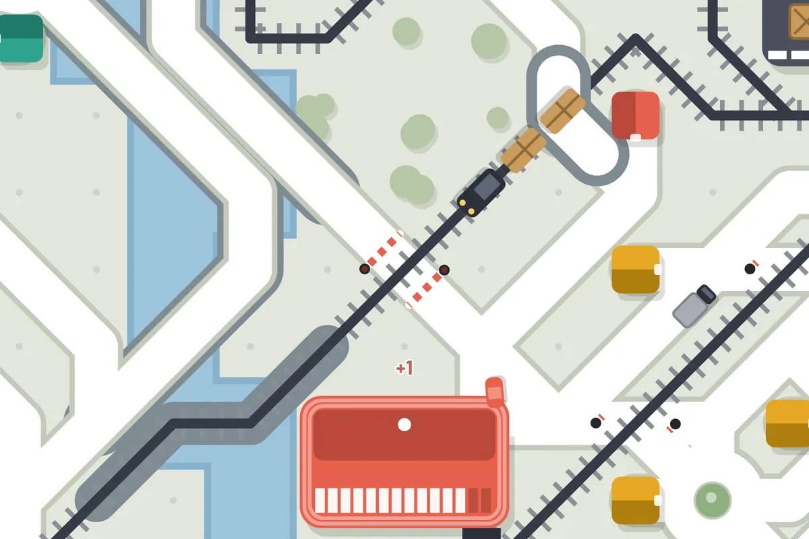
Unde drumul taie calea ferata pui bariere. Fara ele, un tren grabit si o masina neatenta inseamna accident.
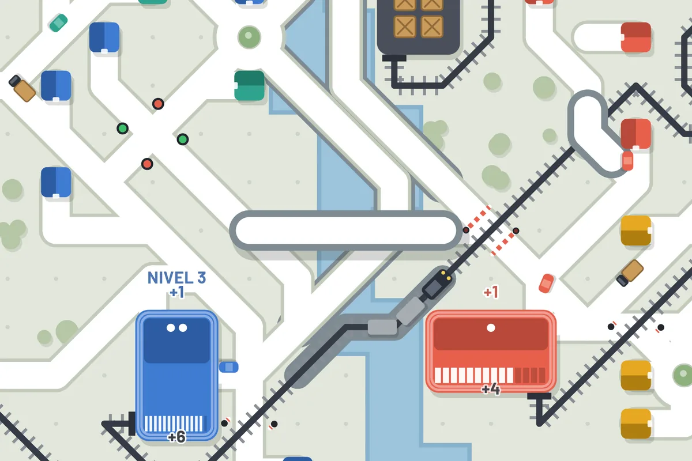
Un drum suspendat sare peste rauri, sine, munti si alte drumuri, pana la 10 patratele dintr-o singura bucata.
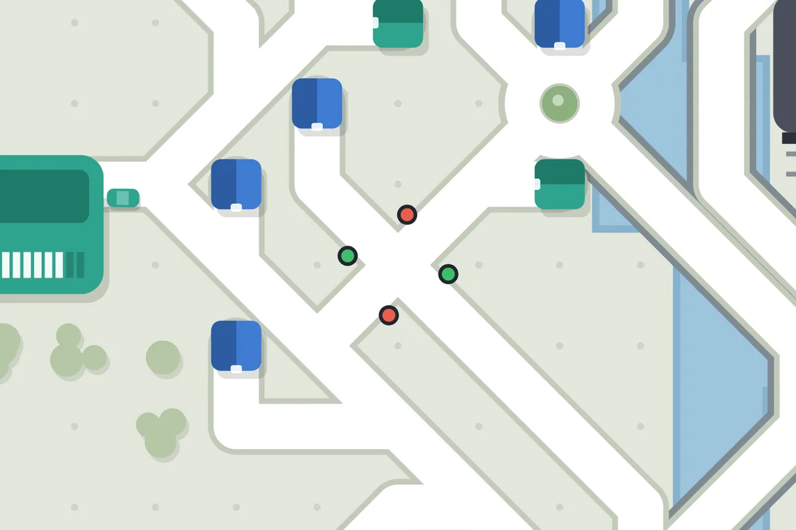
Intersectiile cu trei sau mai multe drumuri se blocheaza repede. Semafoarele lasa masinile sa treaca pe rand.
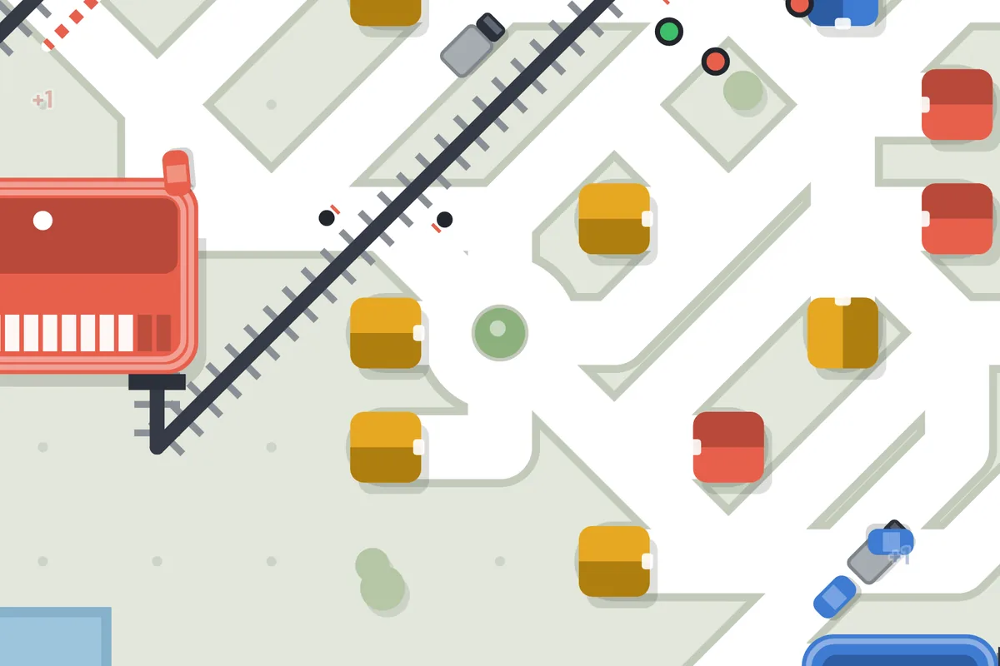
Trafic fluid cand vin masini din toate partile. Mai putine opriri, mai multe livrari.
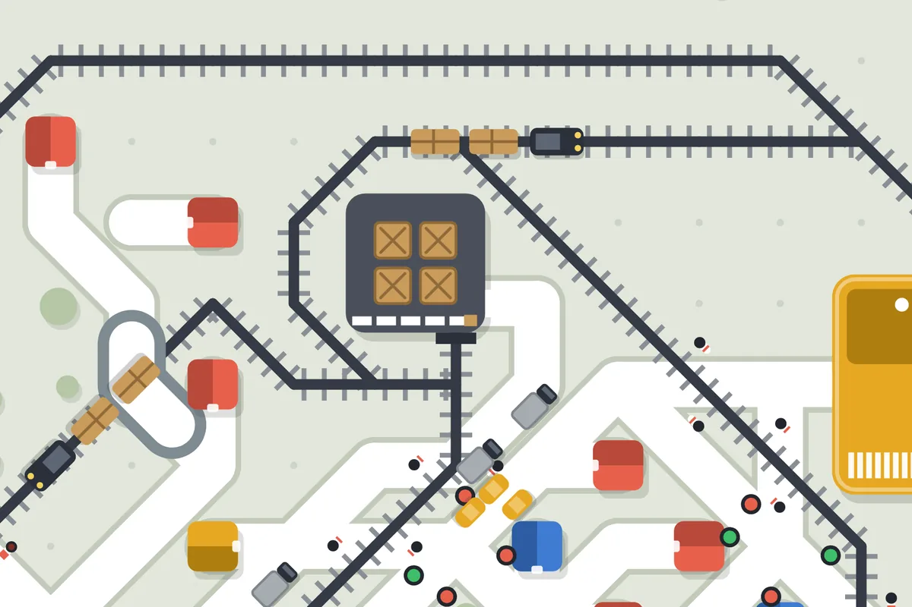
Tu alegi cate trenuri si camioane are fiecare depozit si ce culori de magazine aprovizioneaza.
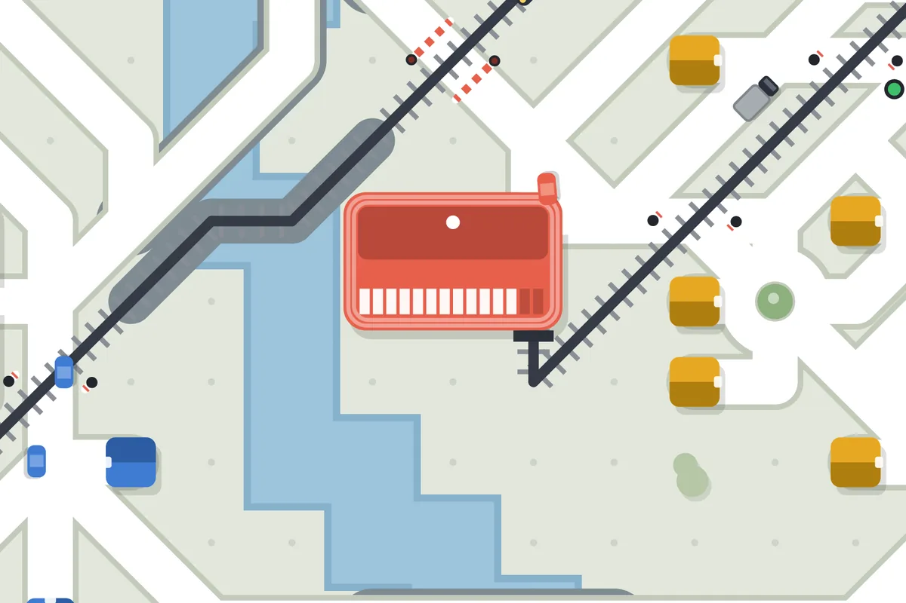
Magazinele bine servite urca pana la nivelul 3. Mai mari, cu mai multi clienti si mai multa presiune pe drumuri.
Fiecare harta are relieful ei: rauri, lacuri, munti si mare. Fa 80 de livrari intr-un oras ca sa-l deblochezi pe urmatorul.
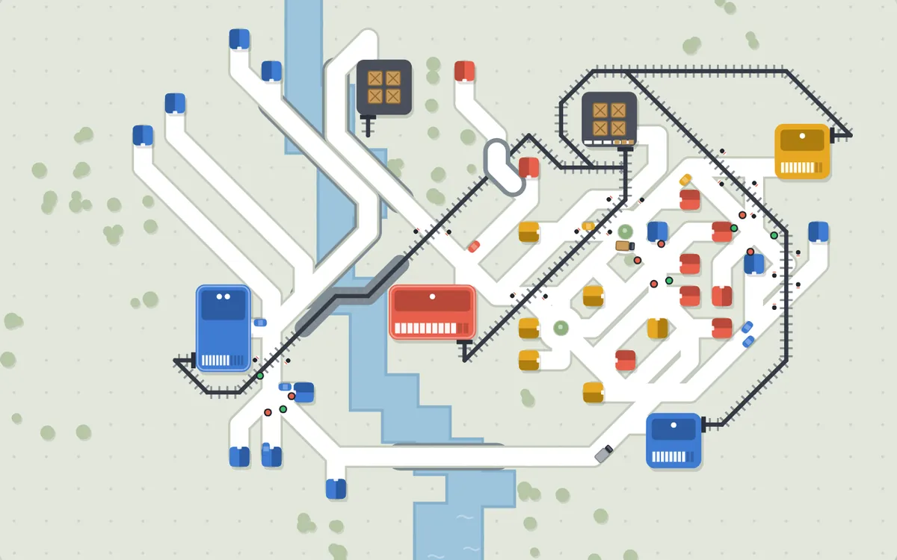
Un rau taie orasul de la nord la sud. Primele poduri si pasaje conteaza.
Deschis de la inceput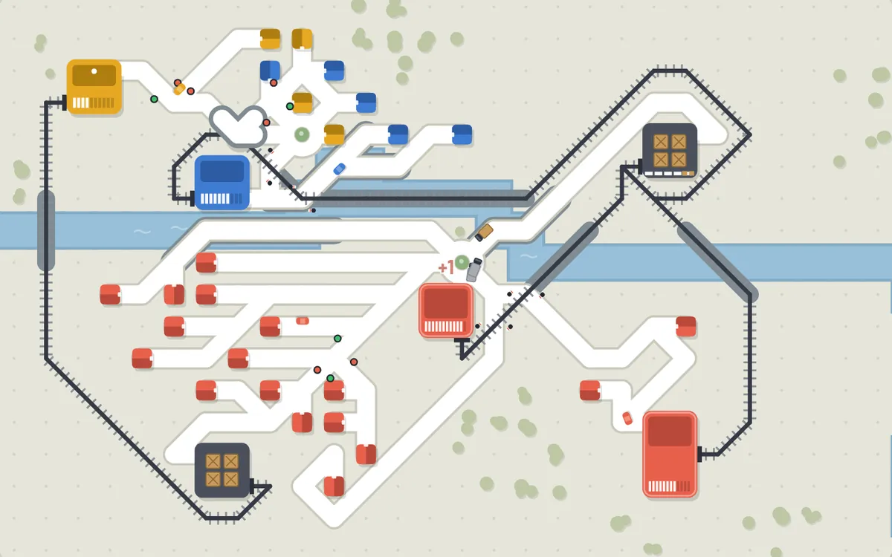
Un rau de la vest la est si un lac in cale. Orasul se intinde pe ambele maluri.
Dupa 80 de livrari in Cluj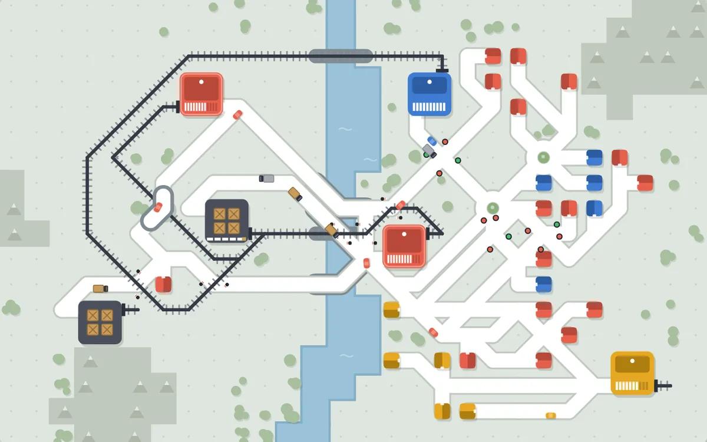
Munti pe margini si un rau prin mijloc. Loc putin, trasee gandite atent.
Dupa 80 de livrari in Timisoara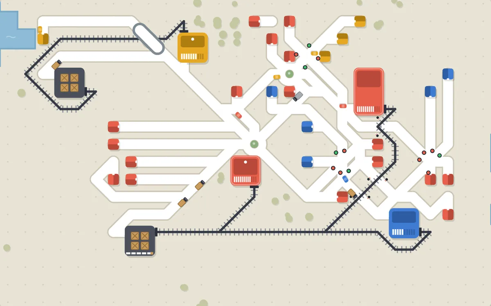
Marea pe o latura si un lac. Nisip in loc de iarba si magazine care cer mult.
Dupa 80 de livrari in Brasov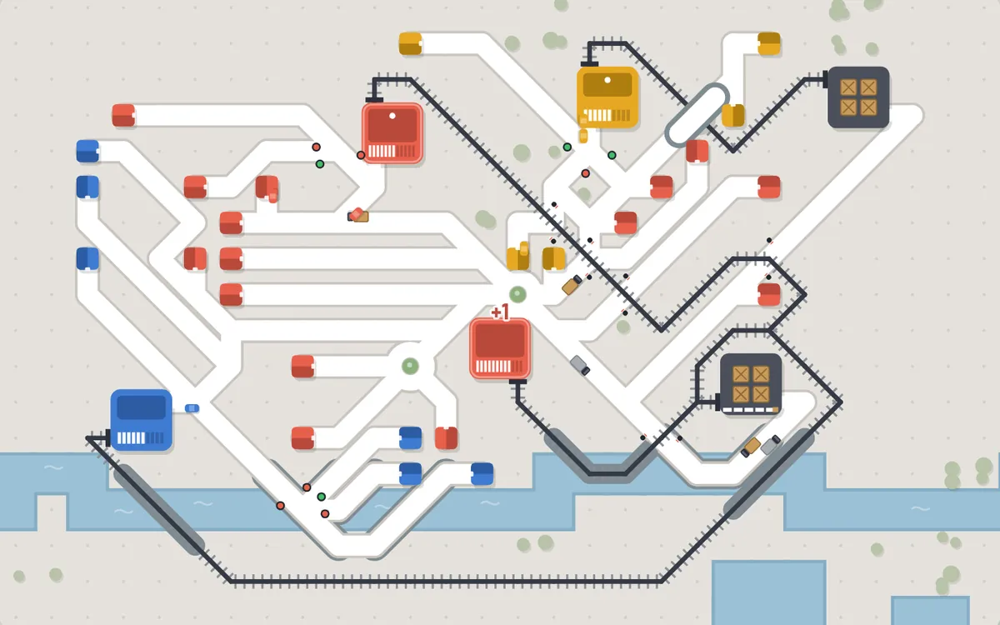
Rau, lacuri si cea mai mare cerere. Cel mai greu oras din joc.
Dupa 80 de livrari in ConstantaInveti in doua minute. Fiecare partida iese altfel, pentru ca orasul creste de fiecare data in alta parte.
Trage un drum de la iesirea casei pana la magazinul de aceeasi culoare.
Uneste depozitele cu magazinele prin cale ferata sau trimite camioane pe drum.
Bariere sau pasaje unde drumul intalneste sina. Semafoare si giratorii unde se aglomereaza.
La final de saptamana primesti drum nou si alegi un bonus. Pierzi cand un magazin asteapta prea mult.
Capturi din versiunea 1.0, cu interfata jocului.
Acelasi joc pe calculator si pe telefon. Progresul se salveaza pe fiecare dispozitiv.
Pe calculator sau laptop, direct din pagina. Fara instalare si fara cont.
Deschide jocul pe telefon si adauga-l pe ecranul principal. Porneste ca o aplicatie, pe tot ecranul, si merge fara internet.
Versiunea pentru Windows si macOS se pregateste pentru Steam. Urmareste proiectul pe GitHub ca sa afli primul.
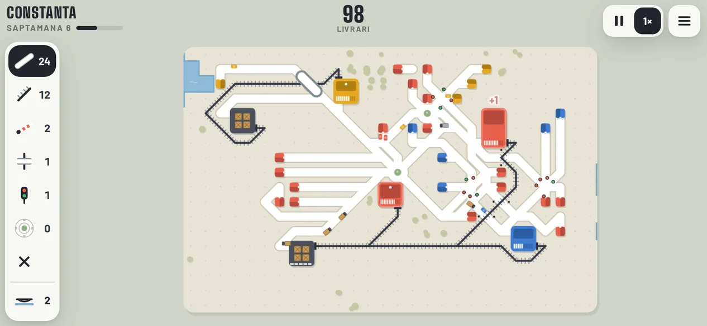
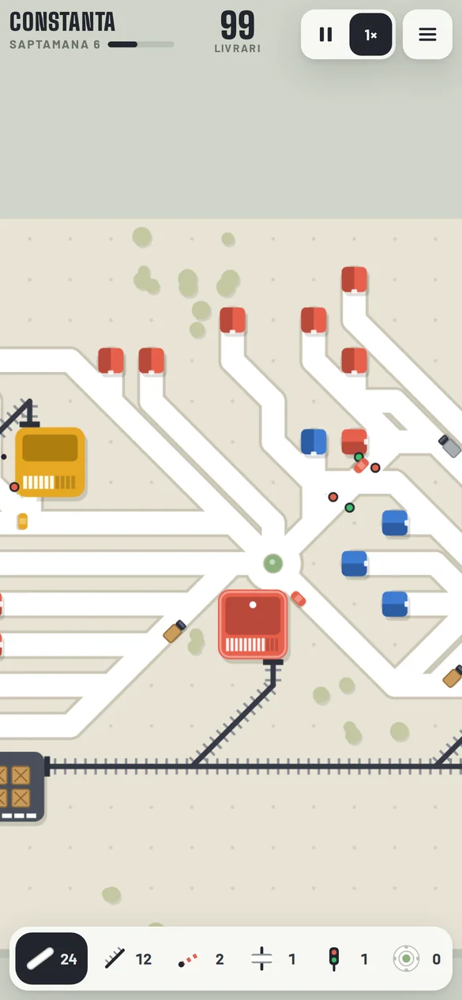
Scaneaza cu camera telefonului ca sa deschizi jocul.
Idei la care lucram pentru versiunile urmatoare.
Un autobuz ia mai multi oameni deodata si elibereaza strazile.
Valuri de trafic dimineata si seara, iar noaptea orasul se aprinde.
Aceeasi harta pentru toti jucatorii, in fiecare zi, cu clasament.
Harti noi dincolo de Romania, fiecare cu relieful si ritmul ei.